Gallery · 2026
Photography
Concerts, travels, landscapes and a few cats.
49photos
All photos © Anaïs Pantzer, 2026. Please do not reuse without permission.
Gallery · 2026
Concerts, travels, landscapes and a few cats.
All photos © Anaïs Pantzer, 2026. Please do not reuse without permission.
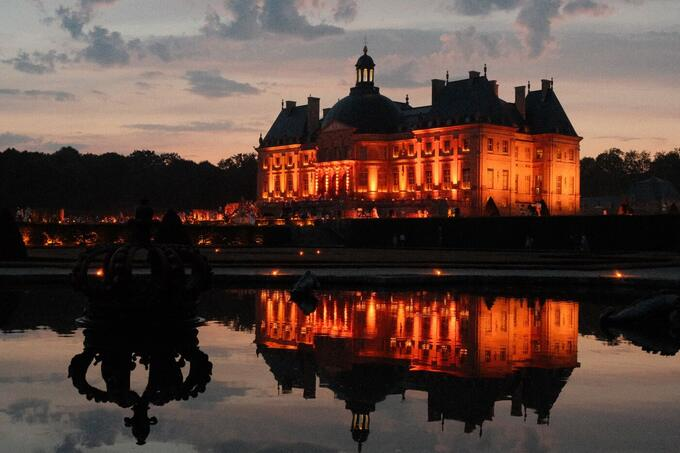

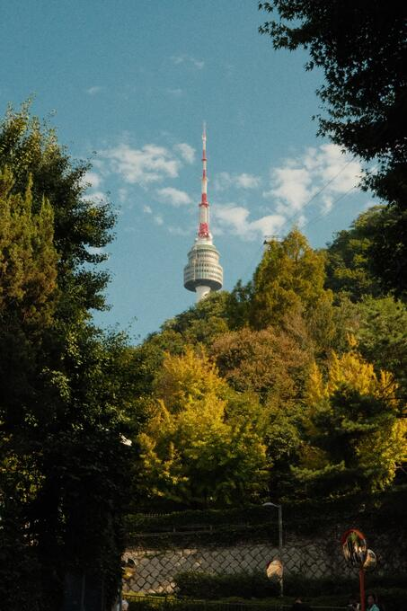


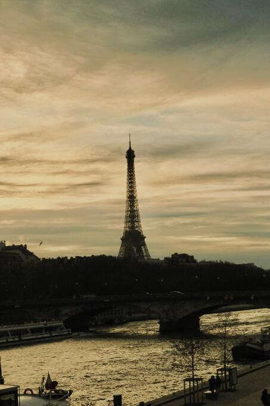

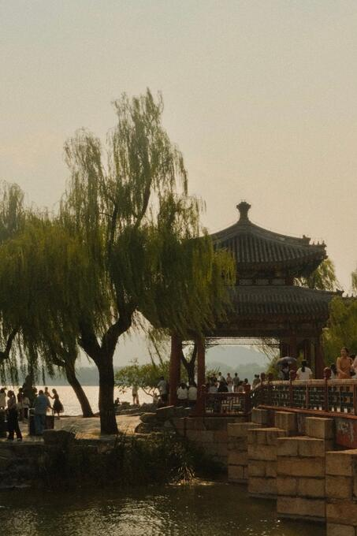
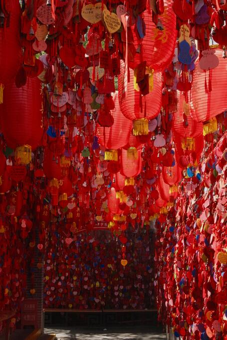
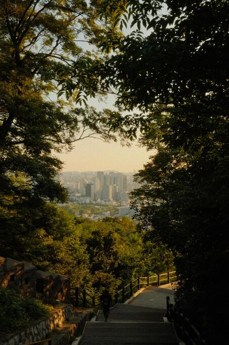
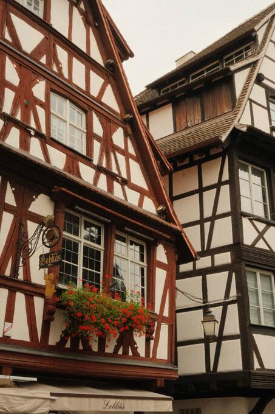

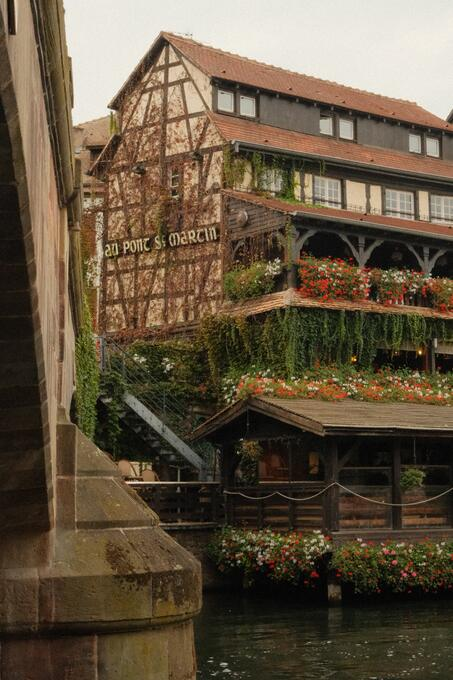
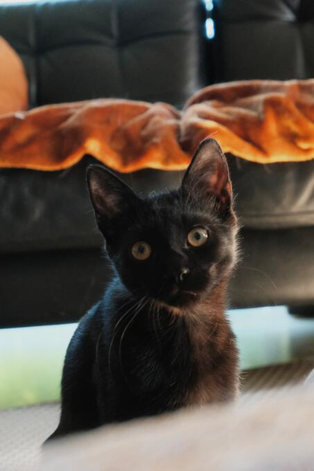
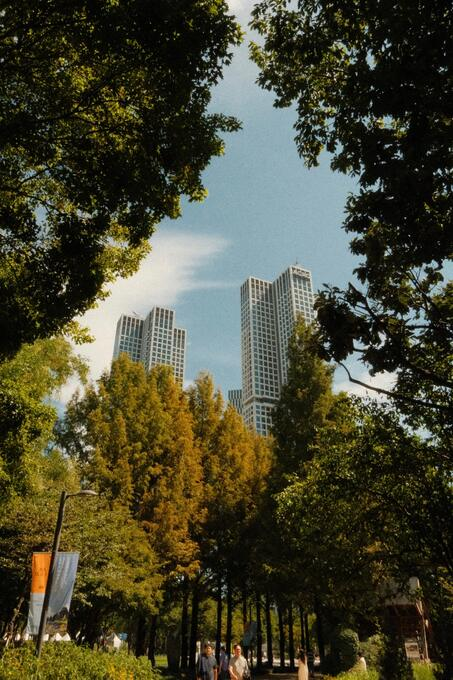

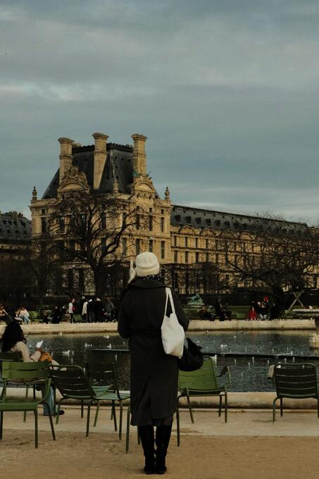


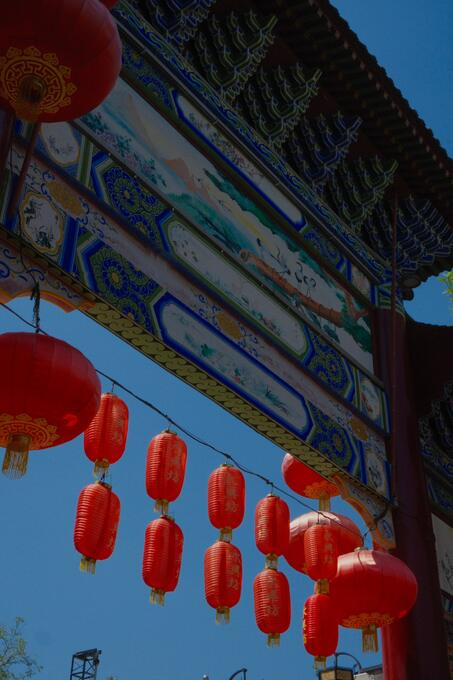


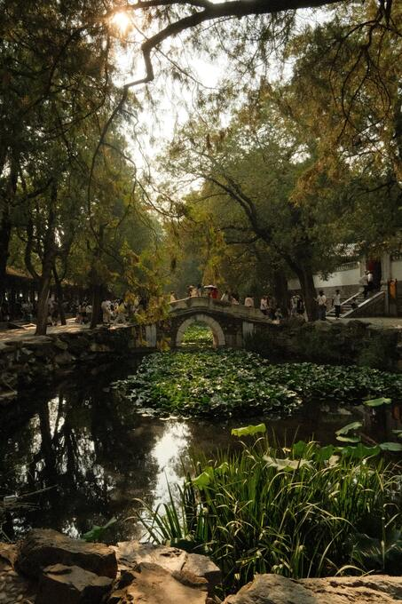
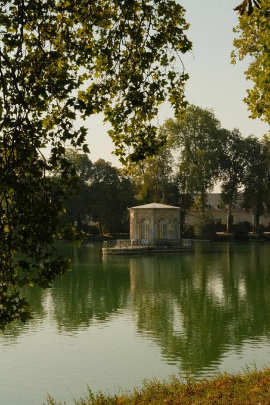
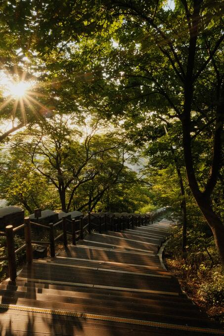
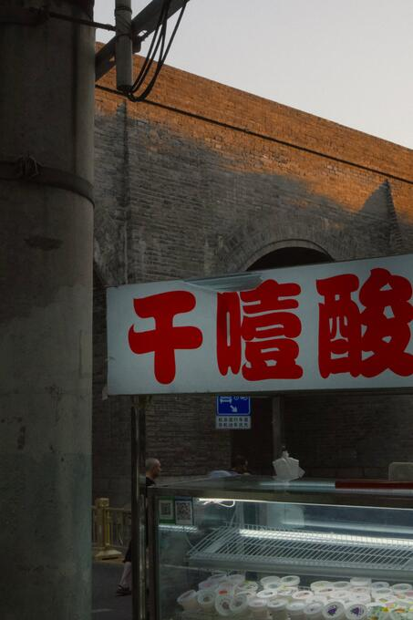


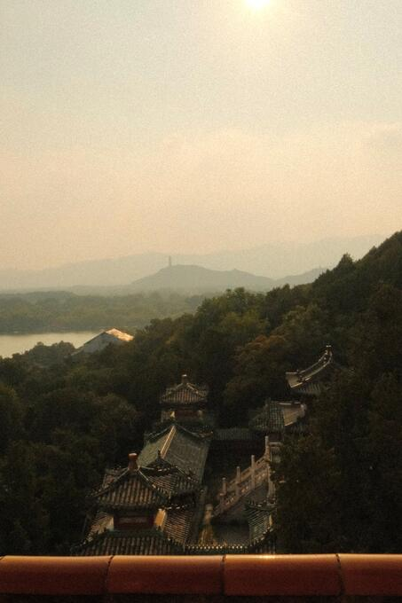


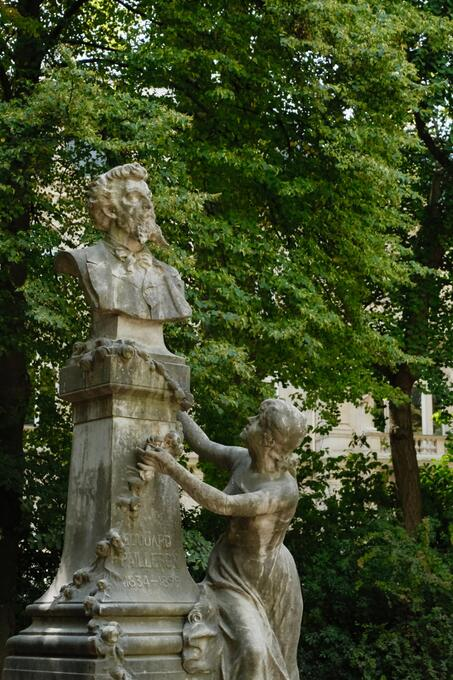
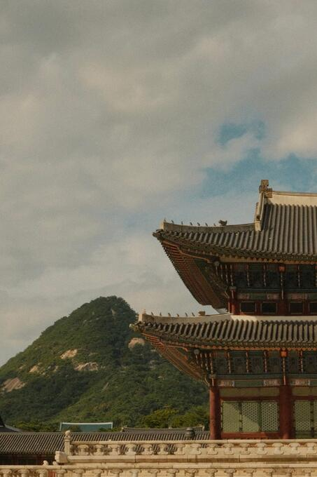
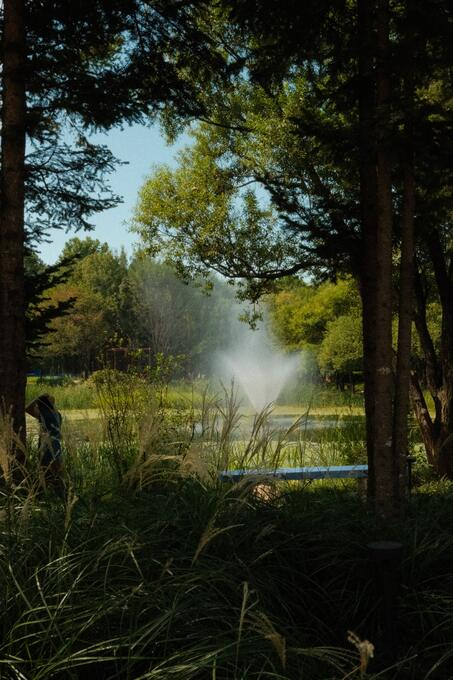

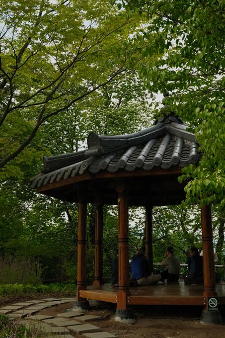